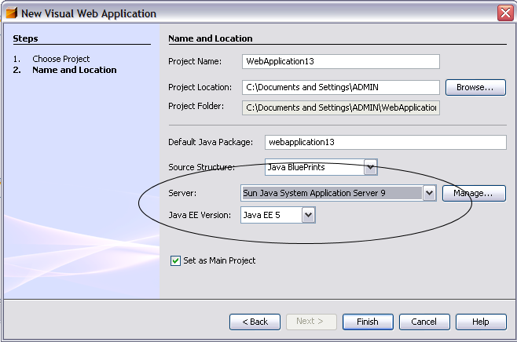

NetBeans Visual Web Pack 5.5.1 Installation Instructions
NetBeans Visual Web Pack 5.5.1 provides an environment for rapidly
building web applications with Ajax-enabled JavaServer Faces components,
support for drag-and-drop binding to data sources, and more.
Contents
Note: For information about system requirements for the software
included in this bundle, see the NetBeans
Visual Web Pack 5.5.1 Release Notes.
Important Notes
Application Servers/Servlet Containers
The Visual Web Pack works with all the application servers
and servlet containers that the NetBeans IDE supports.
Java EE 5/JavaServer Faces 1.2 Constraints
As of this date, only the Sun Java System Application Server 9 U1 (build 14)
or higher supports Visual Web applications that use the Java EE 5 platform.
If you use a different server, you must choose the J2EE 1.4 platform when you create your project.
Bundled Travel Database
Many of the tutorials and sample applications use a Travel database.
If you make the Sun Java System Application Server available
to the IDE before you install the Visual Web Pack,
the Visual Web Pack installation adds a Travel database
to the Java DB (Derby) server that is bundled with the Sun Java System Application Server.
If you make the the Sun Java System Application Server available to the IDE after you install the Visual Web Pack, you must restart the IDE to enable the Travel database.
For instructions on installing the Travel database into your own installation of the Java DB or Apache Derby
database server, see Visual Web Pack Sample Database in the Configuration Information
section.
top
Prerequisites
This topic specifies the prerequisites that must be met
before you start to install NetBeans Visual Web Pack 5.5.1.
Download NetBeans Visual Web Pack 5.5.1 from the
netbeans.org Downloads Page.
Required Software
The following software must be installed before you install NetBeans Visual Web Pack 5.5.1:
- NetBeans IDE 5.5.1.
- Java SE
Development Kit (JDK) 5.0 Update 6 (version 1.5.0_06) or higher.
If you do not have an installation of JDK 5.0 Update 6 or higher,
you cannot proceed with the installation.
You can download this JDK from the Java
SE Downloads page.
Note: Windows Vista requires either JDK 5.0 Update 11 or JDK 6.
You can download both of these JDKs from the Java
SE Downloads page. If you require earlier JDKs, place them later
in the classpath so that 1.5.0_11 or JDK 6 are found first.
Note: Mac OS X installations require
Java 2 Standard Edition (J2SE) 5.0 Release 4.
You can download this JDK from the Apple Downloads page. Search for "J2SE" to locate this release.
- One of the application servers or servlet containers that are supported by the Netbeans IDE.
Note:To develop Visual Web applications using the Java EE 5
platform, you must use the Sun Java System Application Server 9.
For more information, see the
Java EE Downloads web site.
Installation Order
If you are installing the NetBeans Visual Web Pack with the NetBeans IDE
and the separate installation of Sun Java System Application Server,
it is best to configure the application server
before installing the Visual Web Pack so that the bundled Travel database is immediately available.
If you configure the application server after you install the Visual Web Pack,
you must restart the IDE before the Travel database becomes available in the Runtime window.
Firewall Applications
Enabled firewall applications can prevent some components from being
configured correctly during the installation process.
Depending on your firewall, you might have to disable it prior to installation.
Consult your firewall documentation.
top
Installing the Software
This topic contains instructions for installing NetBeans Visual Web Pack 5.5.1 on all supported platforms:
Note: If you have installed the Sun Java System Application Server,
configure the application server on NetBeans IDE, as described in
Application Server Configuration
before installing Visual Web Pack so that the installer
can install the sample Travel schema into the server's bundled Java DB database.
Note that Visual Web Pack does not require an application server,
but you deploy Visual Web Pack projects to an application server.
Microsoft Windows
Following are instructions for installing NetBeans Visual Web Pack 5.5.1 on the Microsoft Windows platform.
Before You Start
The following restriction applies to the installation on the Microsoft Windows platform:
The installer first extracts the required files to the default temporary space directory defined by the TEMP environment variable. If the amount of disk space in the temporary directory is less than required, the installation might fail or proceed incorrectly.
If you encounter this problem, you can increase the space allocated for the TEMP environment variable or specify a different temporary directory that has sufficient space. To specify a temporary directory for the installation, type the following commands:
> cd location-of-installer
> netbeans-visualweb-5_5_1-windows.exe -is:tempdir temporary-directory
To Install
- When you have downloaded the installer file netbeans-visualweb-5_5_1-windows.exe, double-click the installer's icon to launch the installer.
- At the Welcome page of the installation wizard, click Next.
- Accept the license agreement and click Next.
- At the installation directory page of the installation wizard, specify the location of your NetBeans IDE 5.5.1 installation and click Next.
- The installation wizard searches for compatible JDK installations. If your JDK is not in the default location, you will need to specify the location of your Java JDK 1.5.0_06 or higher.
You can also type the path to another installed JDK or use the Browse button to navigate to and select another installation.
- When installation is complete, click Finish to exit the wizard.
The default projects directory is C:\Documents and Settings\username. If you uninstall NetBeans Visual Web Pack, this directory is not deleted, and will be identified the next time you install Visual Web Pack.
Note: If you encounter problems during software installation, see
Troubleshooting for full descriptions and suggested workarounds for unresolved issues that could affect the installation process.
top
Solaris OS and Linux
Following are instructions for installing NetBeans Visual Web Pack 5.5.1 on Solaris and Linux platforms.
In the instructions below, replace your_binary_executable with one of the following:
- Solaris OS, SPARC: netbeans-visualweb-5_5_1-solaris-sparc.bin
- Solaris OS, x86/x64 Platform Edition: netbeans-visualweb-5_5_1-solaris-x86.bin
- Linux: netbeans-visualweb-5_5_1-linux.bin
To Install
- When you have downloaded the installer file your_binary_executable, navigate to the directory that contains the file.
-
If necessary, change the permissions on the installer file to make the binary executable by typing the following command at a command prompt:
$ chmod +x your_binary_executable
- Launch the installer by typing the following command at a command prompt:
$ ./your_binary_executable
- At the Welcome page of the installation wizard, click Next.
- Accept the license agreement and click Next.
- At the installation directory page of the installation wizard, accept the NetBeans IDE directory found by the wizard or select a different IDE installation.
-
Verify that the installation location is correct and that you have adequate space on your system for the installation. To determine the amount of free disk space, execute the following command:
$ df -k
- Click Next to begin the installation.
- When the installation is complete, click Finish to exit the wizard.
The default projects directory is $HOME/. If you uninstall NetBeans Visual Web Pack, this directory is not deleted, and will be identified the next time you install Visual Web Pack.
Note: If you encounter problems during software installation, see
Troubleshooting for full descriptions and suggested workarounds for unresolved issues that could affect the installation process.
top
Mac OS X
Following are instructions for installing NetBeans Visual Web Pack 5.5.1 on the Macintosh OS X platform.
Note that for the Macintosh OS, the required JDK
is Java 2 Standard Edition (J2SE) 5.0 Release 4.
You can download this JDK from the Apple Downloads page.
Search for "J2SE" to locate the this release.
Before You Start
The following restrictions apply to the installation on the Mac OS X platform:
To Install
- Double-click the installer's icon in the download window to launch the installer.
- At the Welcome page of the installation wizard, click Next.
- Accept the license agreement and click Next.
- At the installation directory page of the installation wizard, accept the NetBeans IDE directory found by the wizard or select a different IDE installation.
-
Verify that the installation location is correct and that you have adequate space on your system for the installation. To determine the amount of free disk space, execute the following command:
$ df -b
- Click Next to begin the installation.
- When the installation is complete, click Finish to exit the wizard.
The default projects directory is $username/. If you uninstall NetBeans Visual Web Pack, this directory is not deleted, and will be identified the next time you install Visual Web Pack.
Note: If you encounter problems during software installation, see
Troubleshooting for full descriptions and suggested workarounds for unresolved issues that could affect the installation process.
top
Upgrading NetBeans Visual Web Pack from Version 5.5 to 5.5.1.
NetBeans Visual Web Pack 5.5.1 only works with NetBeans IDE 5.5.1. To upgrade:
- Uninstall Visual Web Pack 5.5, following the instructions in Uninstalling the Software below.
- Uninstall NetBeans IDE 5.5 and install NetBeans IDE 5.5.1 according to the instructions in the NetBeans 5.5 Installation Instructions.
- Install NetBeans Visual Web Pack 5.5.1 as described in Installing the Software above.
Configuration Information
This topic provides information on how to make the Sun Application Server
available to the IDE, how to access the sample Travel database that is used
by some sample applications and tutorials, and how to configure
a Visual Web project.
Sun Java System Application Server Configuration
If you have installed the NetBeans IDE that is bundled with the Sun Java System Application Server,
the application server is already registered with the IDE and you do not need to configure it.
If you downloaded and installed the Sun Java System Application Server
separately, you must configure the IDE to make the server available to
the IDE. It is best to configure the configure the server
before installing the Visual Web Pack.
To configure a separate installation of the server:
- After installing the NetBeans IDE and the Sun Java System Application Server, launch the IDE.
- In the Runtime window, right-click the Servers node and choose Add Server
from the pop-up menu.
- In the Add Server Instance wizard, select Sun Java System Application Server from the Server
drop-down list, and click Next.
- Enter the location of the application server installation and click Next.
The default username and password values for the default Application Server domain, domain1, are:
- username: admin
- password: adminadmin
Note that if you specify a password here, it will be stored in your user directory, a possible security risk. If you do not specify the password here, you will be prompted for the values when needed.- Click Finish.
Visual Web Pack Sample Database
When you install the Visual Web Pack, the installation process
makes a sample Travel database available for the Java DB database
that is bundled with the Sun Java System Application Server, as
shown in the following table. Some
sample applications and tutorials require the Travel database.
If the IDE is configured to use the Sun Java System Application Server
before the Visual Web Pack is installed, the Travel database
will be available from the Runtime window. If you make the
Sun Java System Application Server available to the IDE
after you install the Visual Web Pack, you must restart the IDE
before the Travel database appears in the Runtime window.
| Sample Database |
Connection Details |
Needed For |
|---|
| Travel |
DB URL: jdbc:derby://localhost:1527/travel
Driver: org.apache.derby.jdbc.ClientDriver
Username: travel
Password: travel
|
Some tutorials and sample applications |
Note: To use the Travel database with a server other than the Sun Java System
Application Server, you must make the derbyclient.jar available to the
server, as described in the following section.
If you do not want to install the Sun Java System Application Server,
complete the following steps to make the Travel database available
to the IDE.
- Download and install either the Java DB database or the Apache
Derby database.
-
Complete the following steps to make the database available
to the IDE:
- Choose Options from the Tools menu.
- Clicked Advanced Options.
- Expand Server and External Tool Settings, and select Java DB Database.
- Set the Java DB Location to the folder into which you installed
the database server.
- Set the Database Location to the folder in which you store
the databases.
- Click Close.
- If you have not yet started the database server, choose Tools >
Java DB Database > Start Java DB Server.
- In the Runtime window, right-click Databases and choose New Connection
from the pop-up menu to open the New Database Connection dialog box.
- Choose Java DB (Network) from the drop-down list for Name.
- In the textbox for Database URL, type jdbc:derby://localhost:1527/travel;create=true;.
- Set the Username to travel, set the Password to travel,
and click OK.
- A new node for the connection appears. Right-click the node
and choose Disconnect from the pop-up menu.
- You no longer need the connection to create the database. Right-click
the node and choose Delete from the pop-up menu.
- Right-click Databases and choose New Connection
from the pop-up menu to open the New Database Connection dialog box.
- Choose Java DB (Network) from the drop-down list for Name.
- In the textbox for Database URL, type jdbc:derby://localhost:1527/travel.
- Set both the User Name and the Password to travel
and click OK.
Once the connection has been established, click OK to close the dialog box.
You will use this node from now on to connect to the Travel database.- Right-click the node for the connection and choose Execute Command to
open the SQL Command query editor.
- In the main menu, choose File > Open File.
- Browse to and select $NetBeansInstallDir/rave2.0/startup/samples/create-Travel-derby.sql,
then click Open.
- Click Run SQL in the editing toolbar to create and populate the tables
in the Travel database.
- Close the SQL Command query editor and the create-Travel-derby.sql.
- Expand the node for the travel database connection to view the tables.
For more information:
Visual Web Project Configuration
When you create a Visual Web project, the New Visual Web Application
wizard allows you to set the server and Java EE version for that project,
as shown in the following figure:
|

Figure 1: New Project Wizard |
If you want to use the JavaServer Faces 1.2 components, set the Java EE Version
to Java EE 5. The Sun Java System Application Server 9 is currently the only
tested server that supports Java EE 5 projects. The Visual Web Pack online
help topic New Visual Web Application Wizard has detailed information
about the settings you can use for creating a new project.
The following table is listed at the beginning of each Visual
Web Pack tutorial and shows the resources that work with that tutorial:
JavaServer Faces Components/
Java EE Platform |
1.2 with Java EE 5*
1.1 with J2EE 1.4
|
| Travel Database |
 Not required Not required |
| BluePrints AJAX Component Library |
Not required |
- JavaServer Faces Components/Java EE Platform:
When you choose Java EE 5 for the platform, the Component Palette
contains JavaServer Faces 1.2 components. When you choose
J2EE 1.4 for the platform, the Component Palette
contains JavaServer Faces 1.1 components
Travel Database: If listed as Required, the
Travel database is required for completing the tutorial.
For more information about the Travel database,
see the previous section titled Visual Web Pack Sample.
To use the Travel database with a server other than the Sun Java System
Application Server,
you must either add the derbyclient.jar to
your project or copy it into your server's library directory.
For example, if you want to use the Travel database with Tomcat,
copy the derbyclient.jar file into
$visualwebpack_install\enterprise3\apache-tomcat-5.5.17\common\lib..
You can find a copy of the derbyclient.jar in
$glassfish_install\javadb\lib\derbyclient.jar.- BluePrints AJAX Component Library: If listed as Required, the tutorial demonstrates how to use components that are bundled with the BluePrints AJAX Component Library. See
Downloading and Importing Ajax and Other Components (Archived document) for details.
top
This section contains information for uninstalling NetBeans Visual Web Pack 5.5 and 5.5.1
from your system.
- Shut down the IDE.
- From the Control Panel, start Add or Remove Programs, select NetBeans Visual Web Pack and click Change/Remove.
- Follow the instructions in the uninstaller.
- Remove the $<NetBeans install directory>\rave2.0 directory manually if it still exists.
- Shut down the IDE.
-
Navigate to the uninst subdirectory of your NetBeans Visual Web Pack 5.5 or 5.5.1 installation,
$NetBeansInstallDir/rave2.0/uninst
- Execute the uninstaller script.
- Remove the $NetBeansInstallDir/rave2.0 directory manually if it still exists.
- Shut down the IDE.
-
Navigate to the Visual Web Pack uninst subdirectory
of your NetBeans Visual Web Pack 5.5 or 5.5.1 installation,
$NetBeansInstallDir/NetBeans.app/Contents/Resources/NetBeans/rave2.0/uninst
-
Execute the command:
$ java -jar uninstall.jar.
- Remove the $NetBeansInstallDir/NetBeans.app/Contents/Resources/NetBeans/rave2.0
directory manually if it still exists.
top
Troubleshooting
If you experience problems installing or running the software, see the list of issues below for workarounds. For a complete list of known issues, system requirements, and configuration information,
see the Release Notes.
If you encounter a problem not listed in the release notes or wish to request an enhancement, file an issue in the NetBeans bug tracking system, IssueZilla, at https://netbeans.org/issues.
For Visual Web Pack issues, select the "visualweb" component and then select an appropriate subcomponent. If you are not sure of the right subcomponent name, choose "other".
If you are already logged in to netbeans.org, you can go directly to the visualweb issue entry screen.
Following are the unresolved issues for this release that could affect or disrupt the installation process:
- Solaris installation aborts with the error "JRE not found" even though JRE was installed and specified.
Description: This application requires a Java Run Time Environment (JRE) implementation to run, but the installer is unable to find one on your computer. Use the command line switch -is:javahome to specify a valid JRE. For more help, use the option -is:help.
Workaround: Start the installer with the -is:tempdir custom-temp-dir command line parameter. Note that custom-temp-dir must be an absolute path, and should contain at least 1 GB of disk space.
- Installation of Sun Java System Application Server 9 fails due to conflict with port 4848
Description: By default, Sun Java System Application Server uses port 4848, a port which may be used by another application. You can modify the application server's setup.xml file to point to a different port. Note that this issue only affects standalone installations of Sun Java Application Server, not installations in which the application server is bundled with NetBeans IDE.
Workaround: To assign a different port number to Sun Java System Application Server:
- Navigate to the directory containing the application servers's installer .JAR file. by.
Extract the files in the installer by running the command:
java -Xmx256m -jar filename.jar- Open setup.xml in a text editor.
- Search for the string 4848 and change this number to that of an unused port. Save and close the file.
- Continue with the application server's installation.
top